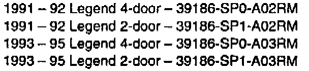

Amplifier - Remanufactured Replacement Part
October 25, 1994YEAR
1991-95
MODEL
LEGEND
VIN APPLICATION
ALL
BULLETIN NO.
94-015
Acura/Bose Amplifier Remanufacturing Program
COVERAGE
Use a remanufactured Acura/Bose amplifier for warranty and customer-pay repairs.
PROCEDURE
When a customer calls or comes in with an audio complaint, obtain the following information:
^ Name
^ VIN
^ Specific complaint
^ Retail delivery date of the car
^ Mileage
Diagnose the problem. Refer to service bulletin 87-015, Audio Unit Exchange Program, for diagnostic procedures. It you determine the amplifier is defective, order a remanufactured unit and schedule an appointment for replacement of the amplifier.
Ordering
Remanufactured Acura/Bose amplifiers can be ordered on a Scheduled Stock Order, Daily Parts Order, or an Urgent Parts Order.
The part numbers for the remanufactured amplifier and the core will both be on the shipper document, along with their respective values. The remanufactured part number ends with "RM." The core part number ends with CO."
Core return and core deposit credits will be handled through the Order Adjustment Return (O.A.R.) system. Refer to Parts Information Bulletin 894-0035, Remanufactured Bose Amplifier Program, for the procedure.
PARTS INFORMATION

Acura/Bose remanufactured amplifier:
WARRANTY CLAIM INFORMATION
In warranty: The normal warranty applies.
Out of warranty: Any repair performed after warranty expiration may be eligible for goodwill consideration by the District Technical Manager or your Zone Office. You must request consideration, and get a decision, before starting work.
Operation number: 010112
Flat rate time: 0.9 hour
Failed P/N: Use AHM part number of amplifier being replaced.
Defect code: 042
Contention code: F02